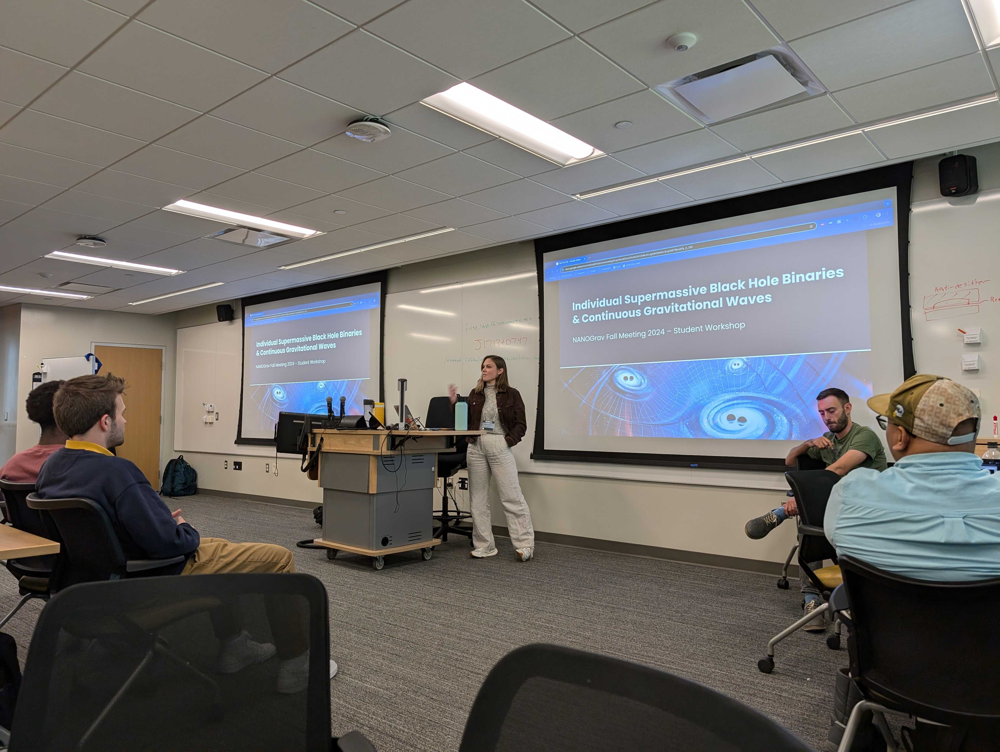
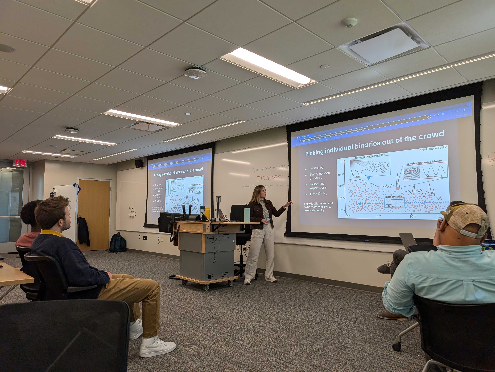
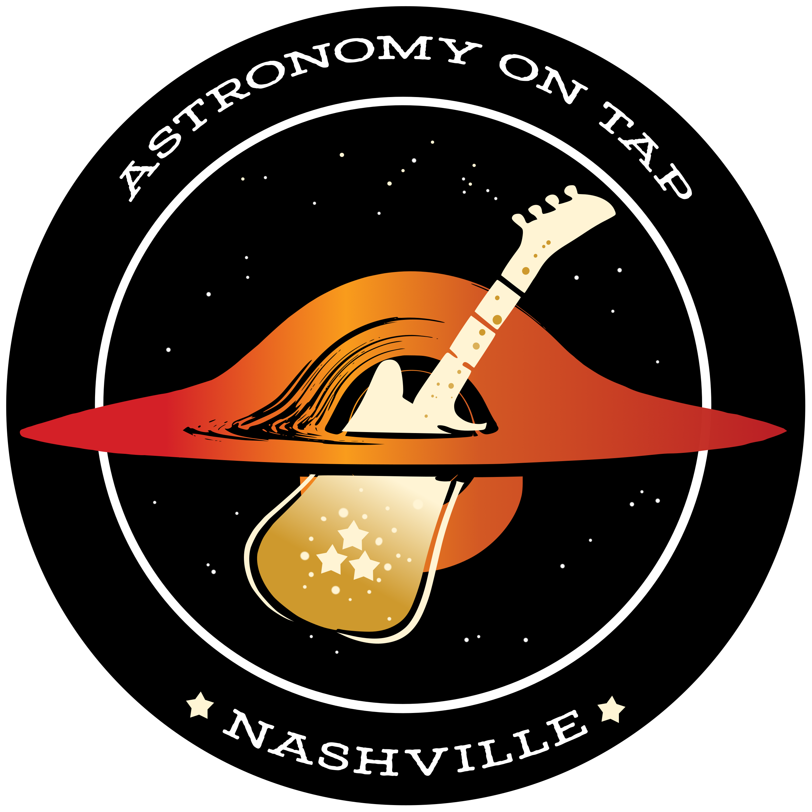

 
I've adapted and written a couple tutorials on continuous gravitational wave searches in PTA datasets,
which you can find
in this repository.
These tutorials were originally written as part of a larger set of lectures + tutorials for the 2024
VIPER Summer School on PTA GW Astrophysics, which has its own larger repository
here,
and have since been used for the NANOGrav Fall 2024 Meeting's student workshop.
Tutorial 1 aims to give users a better intuition for the CW signal, the parameters that
govern it, and how pulsars respond to this signal. It also covers frequentist
(F-statistic)
and Bayesian MCMC searches (using both
PTMCMCSampler
and
QuickCW)
for CWs in a toy dataset and uses the recovered parameters to calculate the binary system's orbital
period and separation, decay timescale, and host galaxy parameters. Tutorial 2
picks up where the first one leaves off, this time focusing more on multi-messenger astrophysics with
PTA data. Starting with the localization information obtained from the CW search, users gain
experience using tools such as
healpy
and
ligo.skymap.
The tutorial then dives into host galaxy identification, bringing together the CW localization
information and NANOGrav's
catalog
of massive galaxies in the local Universe. Functions for calculating the localization area and number
of potential host galaxies therein are provided. Finally, users execute example cuts on potential hosts
before exploring host cut approaches of their own design.
Recordings of tutorial walkthroughs from the 2024 VIPER Summer School can be found below:

Along with fellow PhD student KeShawn Ivory and Vanderbilt astrophysics faculty
Steve Taylor and Keivan Stassun, I was featured on Nashville's NPR station on
their show This is Nashville in July 2023! Check out the recording here:
Peering into space with Nashville astronomers.